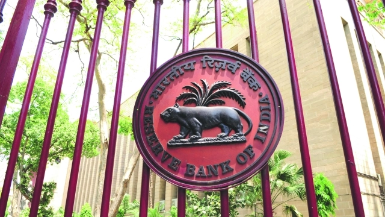

Only the blind or the foolhardy would claim that the Indian economy is in good shape. Despite the government’s obsession with high GDP growth – according to which the Indian economy is doing not just reasonably well but is among the best performers in the world – the fault lines are now only too evident: the external fragilities, the internal imbalances, the crisis in agriculture, the lack of employment opportunities, the rising inequality and the growing insecurity of material life for the majority of the population.
Indeed, these problems are now so intense that they are clearly evident in plain view. The external fragility has been simmering for a while, in the form of rising current account deficits, which were largely financed by inflows of speculative hot money taking advantage of the higher interest rates in India. Such money usually flows out quickly at any sign of trouble. So the recent declines in the rupee cannot be attributed only to the higher global oil prices, but to the more systemic processes. Exports have performed very poorly over the past few years, even when the rest of the developing world was experiencing a slight uptick.
These have made India one of the more potentially vulnerable of emerging markets globally. India and Thailand were the major recipients in Asia of such hot money flows, which were unfortunately interpreted by the government as a sign of strength rather than potential vulnerability. So the economy is ill-prepared to deal with the instabilities and uncertainties that are clearly ahead for the world economy.
But meanwhile, the combination of falling rupee and rising oil prices has had very severe implications domestically, in terms of much higher oil prices faced by the common people, and associated inflationary tendencies. The Modi government benefited for more than four years from very low global oil prices, but it did not pass on any of this to Indian consumers. Instead, it maintained taxes and excise duties at levels that enabled it to instead pocket the difference for its own revenues. But this fiscal advantage for the government (from the oil dividend) did not lead to increased public expenditures in the areas that matter for citizens: nutrition, health, education, the employment scheme. Instead, these have mostly languished under the present government, while the refusal of the central government even to meet longstanding dues to the Food Corporation of India and the MNREGA remains a scandal.
Agriculture has fallen back into crisis, despite reasonably good monsoons, and the enormously impressive marches and protests by farmers in Maharashtra and more recently in Delhi are just one indication of the deep frustration and anger among farmers across the country. Meanwhile, while we have no reliable data on employment generation after 2011-12, it is clear that job creation has been nowhere near the requirement while formal employment has stagnated. The GDP growth patterns are not a sign of healthy sustainable growth, rather it suggests a bubble economy
To add to all of these problems, the various informal sectors taken together, which employ at least 85 per cent of the working population, have been reeling under the double blows of demonetisation and a very poorly implemented Goods and Services Tax roll out. The sudden and bizarre demonetisation obviously met none of its stated goals, exemplified by the fact that almost all of the cash found its way back into the banking system. But it had a terrible impact on the people: immediate distress and even, in extreme cases, deaths; collapse in employment and in livelihood; breaking up of supply chains resulting in dislocation of productive activity; negative multiplier effects on demand that have persisted to this day, causing many small-scale enterprises to simply disappear. In addition, demonetisation had another unintended and possibly medium term impact on monetary conditions. The move was supposed to force the Indian population into relying dominantly on digital transactions. It barely nudged that tendency, in fact it did little more than would anyway have been achieved on the basis of extrapolation of earlier trends. But it did lead to a more widespread distrust of the banking system, as the lack of cash for several months meant that people could not withdraw cash from their own accounts in banks. This, combined with an ill-conceived attempt to bring in a law that would not ensure full guarantee of bank deposits, has led to more public reluctance to keep money in banks – exactly the opposite of what should happen over the course of economic development. This has added to the problems of banks, which are already burdened by high NPAs. And this combination of forces helps us to understand why investment rates continue to fall in India. So what explains this apparent contradiction, the lack of congruence between the aggregate GDP numbers and the lived economic reality of most citizens? It is true that suddenly the growth rate is relatively high again for the quarter of April to June 2018, to as much as 8.2 per cent over the same period in the previous year. But there are good reasons to be cautious about this number. First of all, it is an advance estimate, likely to be revised with more reliable data. Second, some this higher rate can be attributed to the base effect of the relatively lower GDP in the previous year. Third, and perhaps most important, the pattern of this growth provides little cause for celebration.
Even with the new series, in the period 2011-12 to 201617, as much as 44 per cent of GDP growth came from only two sectors: finance, insurance and professional services (33 per cent), and public administration and defence (11 per cent). In the period since then, according to the latest GDP estimates for April-June 2018, as much as 47 per cent has come from these two sectors. This is not a sign of healthy sustainable growth, rather it suggests a bubble economy. Bubbles can burst for many reasons, internal or external, which makes the current instabilities in the world and in India all the more problematic.
Goto top Government Web-Site Link
Latest Information Government Exam Information
About US Contact Us
Mail UsFollow On